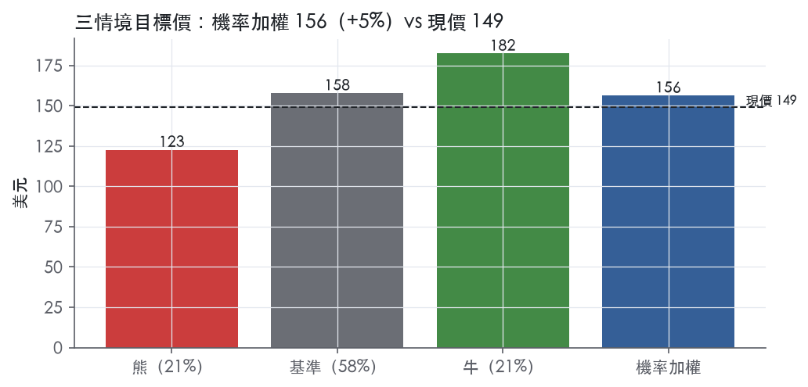
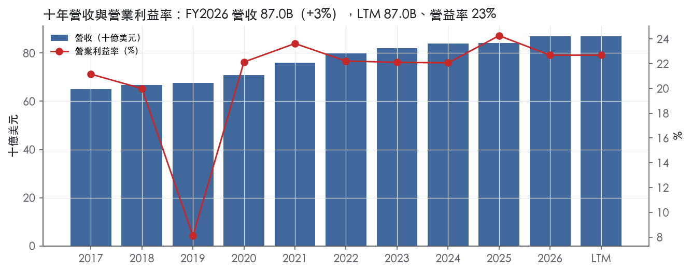
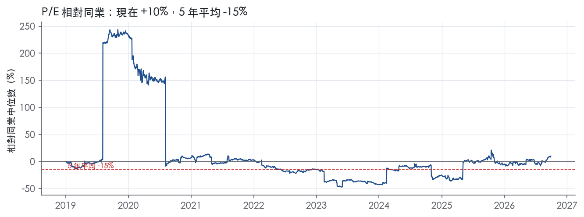
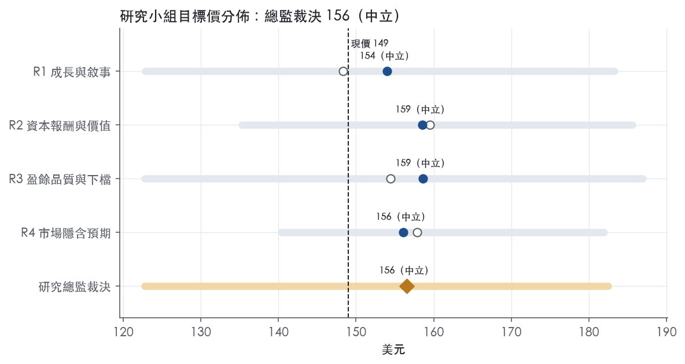
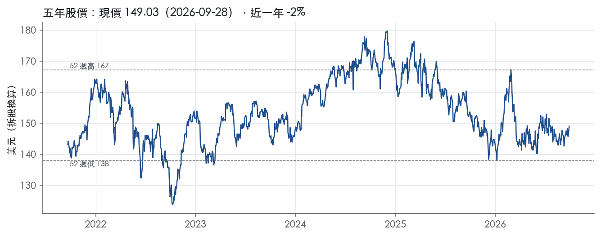

評等總表 › 必需消費 › PG
量未轉正前倍數不回中位，中性｜評等 中立｜目標價 156
| 評等 | 中立（邊界，鄰近加碼） |
| 12 個月目標價 | 156 美元 |
| 現價 | 149.03 美元（2026-09-28） |
| 預期報酬 | 股價 +5.0%＋股息 2.9%＝總報酬 +7.9%；同業籃門檻 5.7%，超額 +2.2% |
| 估值方法 | P/E 23.0x，套在第 5–8 季的EPS（也就是一年後的未來四季） |
| 三情境 | 熊 123／基準 158／牛 182 |
| 研究流程 | 四位研究員兩輪辯論＋研究總監裁決 |
| 資料來源 | SEC EDGAR XBRL、Tiingo、FRED（全免費） |
量未轉正前倍數不回中位，中性（研究總監裁決，四位研究員兩輪辯論後）
評等 中立（邊界，鄰近加碼）｜12 個月目標價 156 美元（總監三情境機率加權 156 與研究員中位數 157 各半）｜現價 149.03（2026-09-28）
預期報酬：股價 +5.0%＋股息 2.9%＝總報酬 +7.9%。同業籃門檻 5.7%，超額 +2.2%，離加碼的分界不到三個百分點，屬邊界評等（落在其他級距的機率約三成）。
估值方法：P/E 23.0x，套在第 5–8 季的EPS（也就是一年後的未來四季）。三情境：熊 123（21%）／基準 158（58%）／牛 182（21%）。
什麼會讓研究總監改變看法：FY2027Q1 有機成長轉負且核心營益率年減不小於 130bp，基準改採熊驅動、倍數降到 21.0x；連續兩季有機量 ≥ +2% 且毛利橋接出現生產力淨留存，倍數上調到前瞻帶 P50 24.7x 並轉看多。
| 過去四季（實際，FY2026Q4） | 未來四季 | 第 5–8 季 | 第 9–12 季 | |
|---|---|---|---|---|
| 營收（B） | 87.0B | 88.8B | 91.4B | 94.2B |
| 營收成長 | 3.3% | 2.0% | 3.0% | 3.0% |
| 營業利益率 | 22.7% | 22.8% | 23.2% | 23.4% |
| EPS（美元） | 6.62 | 6.45 | 6.86 | 7.24 |
| EPS 成長 | 1.7% | -2.5% | 6.4% | 5.4% |
| 每股股息（美元） | 4.26 | 4.26 | 4.26 | 4.26 |
| P/E（現價） | 22.5x | 23.1x | 21.7x | 20.6x |
| 股息殖利率（現價） | 2.9% | 2.9% | 2.9% | 2.9% |
過去四季為申報數字；預測為研究總監的假設、程式計算。倍數與殖利率都用現價計算，用來看現價對應各期獲利的高低。
| 情境 | 機率（歷史） | 故事 | 未來四季營收成長 | 第 5–8 季營益率 | 倍數 | 目標價 | 股價漲跌 |
|---|---|---|---|---|---|---|---|
| 熊 | 21%（20%） | 有機成長轉負加約 10 億美元稅後成本逆風轉嫁失敗、大通路去庫存與回購縮減，對應風險表第 1、4 條（第 3 條放大、第 2 條內含），倍數落到 1y trailing P10 | -0.5% | 21.2% | 21.0x | 123 | -17.6% |
| 基準 | 58%（57%） | FY2027 營收達指引中點、核心 EPS 落指引下半部，重組費用 FY2027 認列完畢後 GAAP 營益率小幅回升，市場從外推續降轉為止跌，倍數停在前瞻帶 P10–P25 | 2.0% | 23.2% | 23.0x | 158 | 5.9% |
| 牛 | 21%（22%） | 量轉正、Beauty 由 Q4 的 +4% 回到 Q3 的 +7% 量級，有機成長回到帶期檔位、營益率回到並超越 FY2025 的 24.3%，倍數回前瞻帶 P50 | 3.0% | 24.3% | 24.7x | 182 | 22.5% |
目標價由程式依研究總監的驅動與倍數計算；機率由研究總監給定。括號內是歷史頻率：把這檔股票過去十年 12 個月報酬的波動形狀，置中在基準情境，結果落在各情境附近的比例。

四位研究員用不同方法各自估值，回應研究總監的質疑後交出第二輪，最後由總監逐點裁決。各研究員的主張見第七章，裁決理由見第八章，完整論證見《研究底稿》。
| 立場（一輪→二輪） | 加權目標價（一輪→二輪） | 評等（一輪→二輪） | 第二輪倍數 | 熊～牛目標價 | |
|---|---|---|---|---|---|
| R1 成長與敘事 | 中性→中性 | 148→154 | 中立→中立 | 22.4x | 123～183 |
| R2 資本報酬與價值 | 看多→中性 | 159→159 | 中立→中立 | 23.0x | 135～186 |
| R3 盈餘品質與下檔 | 中性→中性 | 154→159 | 中立→中立 | 23.0x | 123～187 |
| R4 市場隱含預期 | 中性→中性 | 158→156 | 中立→中立 | 22.7x | 140～182 |
| 研究總監裁決 | 中性 | 156 | 中立 | 23.0x | 123～182 |
目標價由程式依各自的驅動與倍數計算；評等＝機率加權總報酬 − 同業籃門檻。
P&G 是一家全球性日用消費品公司，聚焦提供值得信賴、有品牌、優質且高性價比的產品¹。產品銷售於約180個國家與地區¹，公司1905年在俄亥俄州註冊，前身可追溯至1837年William Procter與James Gamble在辛辛那提創立的事業¹。本質上這是一家靠品牌組合、規模化生產與零售通路控制力賺錢的公司，不是靠單一爆品，而是靠幾十個「每天都要用」的品類建立起消費黏性。公司自己定義的商業模式，是透過產品性能、包裝、品牌溝通、零售執行與價值五個維度追求「不可抗拒的優越性」，並靠持續的生產力改善資金反哺研發與行銷投資，目標是創造均衡的營收與獲利成長¹。FY2026 全年營收 87.03B 美元，LTM 營收同為 87.03B，是一家年營收規模穩定在800億美元以上、成長偏個位數的成熟型消費品巨頭。
10-K 本文將分部細節指向 MD&A 與財務附註第2條，Item 1 本身未逐一列出各分部營收占比與品類明細，屬「10-K 未揭露」在 Item 1 段落中的情況。但從8-K財報稿可還原出公司實際上以五大報導分部營運：Beauty（美妝）、Grooming（美容用品/刮鬍）、Health Care（健康護理，含Oral Care與Personal Health Care）、Fabric & Home Care（衣物家居護理，含Fabric Care與Home Care）、Baby, Feminine & Family Care（嬰兒／女性／家庭護理，含Baby Care、Feminine Care、Family Care）²。FY2026 Q4 各分部組織性銷售（organic sales）表現分化：Beauty +4%、Grooming 0%、Health Care -1%、Fabric & Home Care 0%、Baby/Feminine/Family Care -2%，公司整體組織性銷售全年僅0%²。分部間規模與獲利貢獻的具體百分比，10-K Item 1 未揭露，需查MD&A或附註2。Skin Care 中的 SK-II 屬超高端品牌，是Beauty分部近幾季少數維持成長動能的細分品類²。整體看，公司靠Fabric Care、Baby Care等民生剛需品類提供現金流基本盤，Beauty（尤其SK-II）與Personal Health Care則是近期成長最快的引擎，Grooming與Family Care則相對疲弱。
公司的客戶結構高度集中於大型零售通路，Walmart Inc.及其關係企業在2024、2025、2026年均約佔總銷售的16%，是唯一佔比超過10%的單一客戶¹。前十大客戶在2026與2025年合計約佔總淨銷售43%，2024年約42%¹。客戶類型涵蓋量販店、數位商務（含社群電商）通路、雜貨店、會員制倉儲店、藥妝店、百貨公司、批發商、專業美妝店（含機場免稅店）、高頻消費通路、藥局、電子產品店與專業通路，也包含直接對消費者銷售¹。這種客戶集中度意味著P&G對大型零售商的議價力與貨架佔比至關重要，Walmart這類巨型通路的庫存與促銷策略會直接牽動單季營收波動。地區別方面，10-K Item 1 本身未提供各地區營收占比，8-K財報稿中僅提到部分品類成長驅動來自北美、歐洲、大中華區、亞太、拉丁美洲及印度中東非洲（IMEA）等區域敘述，但未附具體區域營收數字²，因此地區營收結構屬「10-K 未揭露」。
FY2026 Q1（截至2025-09-30）營收 22.39B、年增3.0%，毛利率51.4%、營益率26.2%，屬近八季表現較強的一季（系列）。FY2026 Q2（截至2025-12-31）營收 22.21B、年增1.5%，毛利率51.2%、營益率24.2%，獲利能力略降但仍維持穩健水準。FY2026 Q3（截至2026-03-31）營收 21.23B、年增7.4%，組織性銷售成長3%，柔性EPS 1.63美元、年增6%，主因是Glad合資企業解散帶來的一次性收益³；當季公司維持全年財測不變³。FY2026 Q4（截至2026-06-30）營收 21.20B、年增1.5%，但組織性銷售持平於0%，稀釋EPS降至1.26美元、年減15%，核心EPS 1.43美元、年減3%，主因SG&A費用率上升與毛利率下滑²。全年FY2026營收87.0B美元、年增3%，組織性銷售僅增1%，稀釋EPS 6.62美元、年增2%，核心EPS 6.89美元、年增1%²。公司對FY2027財測：全年整體銷售成長1%至3%，組織性銷售成長同樣1%至3%（其中包含30-50個基點因品牌、產品形式及通路淘汰帶來的逆風），稀釋EPS成長1%至5%，核心EPS成長區間為與去年持平至成長3%，即6.89至7.11美元、中位數7.00美元²。可以看到Q4是全年轉弱的一季，組織性銷售零成長、獲利端明顯承壓，這也直接拉低了FY2027財測的樂觀度。
執行長Shailesh Jejurikar表示，FY2026是「在充滿挑戰的地緣政治與經濟環境下，一邊打基礎、一邊持續成長銷售與利潤，並向股東返還高水位現金」的一年，並表示FY2027將「加倍投入既有策略，把消費者放在一切工作的核心」，透過更強、更整合的執行力以優越產品與優越價值取悅消費者²。公司強調將以「強勁的生產力計畫」資助投資，並有信心「逐半年加速成長」²。在2025年6月宣布的「聚焦組合、供應鏈與生產力計畫」下，公司預計兩年內產生稅前約10億至16億美元的非核心重組費用，FY2026已發生逾半數費用，剩餘部分將於FY2027認列²。10-K層面，公司將差異化競爭力歸因於在產品、包裝、品牌溝通、零售執行與價值五個維度上的整合策略，並表示在多數所處市場中「常保持領導或顯著市佔地位」¹；研發與消費者洞察被列為發明新品類、創新既有產品的核心投入來源¹。
從投資角度看，P&G目前的敘事是「重組換效率、以價補量」——組織性銷售成長已連續放緩到全年僅1%，FY2027財測區間也刻意保守（核心EPS中位數僅+1.5%），顯示管理層對總體消費環境與關稅、原物料成本壓力保持謹慎。公司財測中明確點出FY2027將面臨約10億美元稅後原物料/能源/運輸成本逆風及1.5億美元利息費用逆風，合計每股拖累達0.56美元、約8個百分點核心EPS成長，這是判斷本年度獲利能否超預期的關鍵變數。若组織性銷售能從目前的0%~1%回升至歷史正常的3%~4%區間，同時重組計畫效益在FY2027完整顯現，估值修復空間值得留意；反之若Health Care與Baby/Family Care持續疲弱，全年財測下緣的機率偏高。

P&G 評為寬護城河，趨勢穩定。品牌組合與全球規模帶來的超額報酬，在每一個有資料的年度都明顯高於資本成本，我們有把握這個狀態延續 10 年以上。趨勢暫不下修，但 FY2026Q4 利潤率是近八季最低，這是下一次覆核時第一個要檢查的訊號。
優勢以無形資產為主、規模成本優勢為輔。轉換成本、網路效應、效率規模三類找不到證據，不列入。
無形資產（品牌、專利）：這是護城河的核心。公司自述，其成功部分歸因於商標與專利的存在及持續受到保護⁴。專利涵蓋多項產品特性，包括重要的產品配方與製造流程⁴。公司透過廣告、促銷與代言建立品牌知名度與消費者忠誠度⁴。日用品單價低、消費者試用新品的成本也低，自有品牌要搶市佔，最大的障礙就是消費者對品牌的信任。這道護城河不會自己維持，需要靠持續的研發與行銷投放來守住。
成本優勢（規模）：這是次要來源，但真實存在。產品銷售於約 180 個國家與地區⁴，在多數市場常居領導或顯著市佔地位⁴。公司自產部分原料，主要是化學品⁴。商業模式仰賴持續的生產力改善，用省下的資金投入研發與行銷⁴。FY2026 營收 87.03B的規模，讓研發與廣告這類固定成本能攤得比中小品牌薄，形成「規模養品牌、品牌撐規模」的循環。
轉換成本不成立：消費者隨時可以換品牌，公司也承認在許多市場要與零售商的自有品牌競爭⁴。
大致看得到：ROIC 與毛利率支持寬護城河，營益率波動是唯一的衝突，而 ROIC 的資料年限不足十年。
最大的威脅是通路議價力與自有品牌，其次是投入成本。
目標倍數應相對同業溢價；溢價的理由是報酬率穩定、超額報酬持續時間長，不是成長性。目前 P/E 22.5x，位於自身五年分位 17.6%，低於五年中位數 25.8x。護城河在數字上並未惡化，這個折價反映的是成長放緩與近一季利潤率走弱，只要毛利率守住底稿區間，就不應再對護城河本身打折。
| 指標 | 最新 | 十年平均 | 標準差 | 最低 | 最高 |
|---|---|---|---|---|---|
| ROIC | 20.1% | 20.6% | 0.6% | 20.1% | 21.6% |
| 毛利率 | 50.2% | 49.7% | 1.4% | 47.4% | 51.4% |
| 營業利益率 | 22.7% | 20.8% | 4.4% | 8.1% | 24.3% |
| FCF 利潤率 | 17.4% | 17.7% | 1.8% | 14.4% | 20.5% |
| ROE | 30.1% | 26.5% | 7.7% | 7.8% | 31.5% |
程式計算。資本成本代理值（10 年債＋5%）：10.2%；ROIC 平均減資本成本：10.4%；ROIC 有資料的 5 年中，高於資本成本 5 年。
LTM 營業現金流／淨利為 1.22x，近三年平均同為 1.22x，均高於十年平均 1.48x 的一半以上，現金持續支撐盈餘。FY2026 CFO 19.56B、淨利 16.05B（資料包年度表），現金流仍優於帳面盈餘。自由現金流／淨利 LTM 0.94x、近三年 0.98x，低於十年平均 1.18x，主因資本支出佔營收比重從 FY2025 的 4.5% 升至 FY2026 的 5.1%（資料包年度表），屬於投資強度上升而非盈餘品質惡化。應計比率 LTM 為 -2.8%，優於「≤0.0% 綠」的門檻，代表淨利甚至比 CFO 更保守，沒有靠應計項目撐盈餘。整體看，現金端沒有落後盈餘，唯一要留意的是資本支出擴張正在壓縮 FCF 轉換率。
FY2026 全年 GAAP 稀釋 EPS 6.62 美元，Core EPS 6.89 美元，差距約 0.27 美元²。第四季差距更明顯：GAAP EPS 1.26 美元 vs. Core EPS 1.43 美元，年減幅度上分別是 GAAP -15% 與 Core -3%，落差主要來自本季認列的非核心重組費用（約佔營益率 90 個基點）²。公司在 2025 年 6 月宣布的「Focused Portfolio, Supply Chain and Productivity Plan」預計兩年內認列稅前約 10 億至 16 億美元的非核心重組成本，FY2026 已認列超過一半，剩餘部分留到 FY2027²。FY2027 GAAP EPS 指引中也明確納入每股 0.13 至 0.17 美元的預期非核心重組費用²。另外，「調整後自由現金流生產力」計算時，公司將 FY2026 因 Glad 合資解散產生的一次性利得從淨利分母中剔除²。這幾項調整（重組費用、資產處分利得）性質上偏一次性、可信度高，屬合理剔除，但重組計畫橫跨兩個財年、金額達十億美元級，代表這不是單一季的雜訊，而是持續兩年的營運重整成本，估值時不能完全視為「非經常」。
槓桿與利息保障能力仍處於安全區間，淨負債／EBITDA LTM 1.06x，近三年 1.07x，遠低於十年平均 1.40x 與「>3.00x 紅」的警戒線。利息保障倍數 LTM 22.5x，近三年 21.7x，同樣遠優於十年平均 26.6x 附近的區間，且都遠高於「<3.00x 紅」的門檻，付息能力沒有壓力。股東回饋方面，FY2026 支付股利 10.2B 美元、回購股份 5.0B 美元，合計超過 15B 美元回饋股東²，（股利＋回購）／淨利 LTM 為 95.1%，接近全部盈餘用於回饋，近三年平均更達 97.9%，十年平均 133.3%，顯示公司長期傾向把幾乎全部盈餘、甚至舉債加碼回饋股東的資本配置風格。FY2027 展望維持約 100 億美元股利、50 億美元回購的規模²，資本配置節奏沒有轉向。
稀釋股數年變動由負轉正（黃燈）：LTM 稀釋股數年變動 +0.2%，近三年平均 -0.8%、十年平均 -1.3%，代表過去長期靠回購淨減少股數的趨勢，在最近一年出現停滯甚至微幅反轉。對照 FY2026 回購金額 5.0B 美元與 FY2027 指引同樣維持約 5.0B 美元規模²，回購金額本身沒有縮水，稀釋轉正較可能是股權薪酬發行股數與回購量接近抵銷所致，屬於節奏性現象而非停止回饋股東的訊號，判定為假警報但需持續觀察是否轉為趨勢。
程式紅旗：淨利率 FY2019→FY2020 跳動 +13 個百分點：資料包年度表顯示 FY2019 營益率 8.1%、EBITDA 8.31B，遠低於前後年份（FY2018 營益率 20.0%、FY2020 營益率 22.1%），EPS 也從 FY2019 的 1.43 美元跳升至 FY2020 的 4.96 美元（資料包年度表）。這個跳動集中在單一年度且前後年份均恢復到 20% 以上的正常營益率水準，型態上符合「單一年度一次性項目」而非結構性惡化。由於本次提供的 10-K MD&A 節錄未涵蓋 FY2019 損益細節，無法在原文中找到直接一次性項目的文字說明，此項判斷僅依據資料包數字的型態，屬於程式標記但年代久遠、與當前盈餘品質評估關聯度低的歷史雜訊。
應收帳款、存貨與營收成長背離：FY2026 應收帳款成長減營收成長為 -5.3pp、存貨成長減營收成長為 +4.9pp，兩者均落在「≤5pp 綠」與「≤5pp 綠」的安全區間內，存貨端已貼近門檻但尚未觸發，屬正常波動。
SBC／營收：LTM 0.6%、十年平均 0.7%，遠低於「>8.0% 紅」的警戒線，股權薪酬對盈餘的稀釋效果極小，本系統計分未加回 SBC 前提下依然全數綠燈。
估值應以 GAAP 盈餘為主要基準，Core EPS 只用來看核心營運趨勢，因為重組費用雖屬非核心，但橫跨兩個財年、金額達十億美元級，具備持續性，不宜整筆加回。現金轉換、槓桿、利息保障全數綠燈，不構成對倍數的額外限制，1.06x 的淨負債／EBITDA 遠低於警戒線，債務結構不是限制估值倍數的因素。盈餘品質本身不需要對 GAAP 數字打折，但資本支出上升壓縮 FCF／淨利、稀釋股數轉正兩項趨勢值得在假設未來自由現金流與每股價值時保守處理。
| 項目 | LTM | 近三年 | 十年 | 燈號 | 規則 |
|---|---|---|---|---|---|
| 營業現金流／淨利 | 1.22x | 1.22x | 1.48x | 綠 | ≥1.00x 綠、<0.80x 紅 |
| 自由現金流／淨利 | 0.94x | 0.98x | 1.18x | 綠 | ≥0.90x 綠、<0.60x 紅 |
| 應計比率（(淨利−CFO)／平均總資產） | -2.8% | -2.8% | -3.7% | 綠 | ≤0.0% 綠、>5.0% 紅 |
| SBC／營收 | 0.6% | 0.6% | 0.7% | 綠 | ≤3.0% 綠、>8.0% 紅 |
| 淨負債／EBITDA | 1.06x | 1.07x | 1.40x | 綠 | ≤1.50x 綠、>3.00x 紅 |
| 利息保障倍數（營業利益／利息） | 22.5x | 21.7x | 26.6x | 綠 | ≥8.00x 綠、<3.00x 紅 |
| 稀釋股數年變動 | 0.2% | -0.8% | -1.3% | 黃 | ≤0.0% 綠、>3.0% 紅 |
| （股利＋回購）／淨利 | 95.1% | 97.9% | 133.3% | 綠 | ≥50.0% 綠、<0.0% 紅 |
| 應收帳款成長 − 營收成長（FY2026） | -5.3pp | — | — | 綠 | ≤5pp 綠、>15pp 紅 |
| 存貨成長 − 營收成長（FY2026） | +4.9pp | — | — | 綠 | ≤5pp 綠、>15pp 紅 |
程式計算；燈號以 LTM（無則近三年平均）判定。
| 風險 | 觸發指標（看什麼數字、在哪裡看） | 對 EPS 的影響方向與粗略幅度 | 未來 12 個月發生機率（高／中／低） | 出處 |
|---|---|---|---|---|
| 組織性銷售停滯、靠漲價/匯率撐營收 | 每季8-K的organic sales成長率、volume/mix分解 | 負向，中：FY2026 Q4 organic sales已降至0%，volume持平（8-K數字） | 高 | 8-K 財報新聞稿（2026-07-29） |
| 毛利率與SG&A費用率雙向擠壓核心利潤 | 每季8-K的reported/core gross margin、SG&A% of sales變化(bps) | 負向，中：Q4 reported gross margin年減60bps，SG&A%增160bps，核心EPS年減3% | 高 | 8-K 財報新聞稿（2026-07-29） |
| 客戶集中度高，Walmart與前十大客戶議價力強 | Walmart佔總銷售比重（10-K揭露）、前十大客戶佔比 | 負向，大：Walmart約16%、前十大客戶約43%營收，任何一家調整庫存/貨架即衝擊季營收 | 中 | 10-K 年報 FY2025 Item 1（業務） |
| 關稅、原物料與能源成本逆風 | FY2027財測中的原物料/能源/運輸稅後逆風金額、每季8-K毛利率橋接中的commodity costs bps | 負向，大：公司自估FY2027稅後逆風約10億美元、加計利息逆風合計每股拖累0.56美元 | 高 | 【判，數字引自業務概況章／8-K財測】 |
| 地緣政治與匯率波動（歐元升值、俄烏/中東衝突、貿易政策） | 匯率變動對淨銷售的貢獻bps（8-K每季揭露）、10-K列示的制裁/關稅事件 | 負向，中：海外營收占比逾50%，匯率與關稅是FY2026營收成長3%中2%的組成部分，波動性高 | 中 | ⁵² |
組織性銷售停滯是目前最該盯的風險，因為它直接決定P&G能不能維持過去靠品牌溢價定價的敘事。FY2026全年organic sales僅增1%，且全靠漲價貢獻，volume與mix完全打平²。更關鍵的是Q4單季organic sales已降到0%，Health Care（-1%）與Baby/Feminine/Family Care（-2%）兩個分部組織性銷售是負的²。這代表消費者對漲價的容忍度可能已經見頂，公司公布FY2027財測時也承認全年組織性銷售成長仍只有1%至3%，其中還包含30-50個基點的品牌/通路淘汰逆風²。監測方法很簡單：每季8-K的organic sales數字一出來，如果連續兩季維持0%或轉負，市場會立刻重新定價P&G的成長溢價，這是P/E目前落在5年P10分位（17.6%）附近（=21.7x，現值22.5x）的原因之一。
毛利率與SG&A擠壓是第二個要緊盯的變數。Q4 reported gross margin年減60bps，SG&A占營收比重卻年增160bps，兩頭夾殺導致當季diluted EPS年減15%、核心EPS年減3%²。管理層自己揭露的橋接顯示，160bps生產力節省被120bps不利產品組合、70bps產品/包裝再投資、40bps原物料成本上升全部吃掉²。這代表所謂的「生產力計畫」目前只夠打平成本上升，還不足以貢獻淨利提升，如果重組效益在FY2027沒有如期顯現，核心EPS財測（年增0%至3%，中位數7.00美元）的下緣機率會升高。
客戶集中度是結構性風險，10-K本身白紙黑字寫明。Walmart及其關係企業連續三年（2024、2025、2026）都佔P&G總銷售約16%，是唯一超過10%的單一客戶，前十大客戶合計佔比43%¹。10-K原文也提到「持續的零售客戶集中、買方聯盟增加或客戶談判策略改變，可能對業務造成顯著成本與利潤壓力」⁵。這種集中度意味著任何一次與Walmart的貿易條件談判破裂，或Walmart主動縮減庫存/貨架空間，都會直接反映在下一季營收數字上，而且不需要總經環境轉壞就能發生，屬於可監測、機率中等但衝擊面大的風險。
關稅與原物料成本在10-K中被列為反覆出現的主題，原文明確點名「commodity（包括樹脂等石化原料、紙漿等紙基材料）、原物料與包材、勞動力、關稅、運輸、能源、退休金與醫療成本」都會波動，且公司「可能或可能不會」把成本轉嫁給客戶⁵。這句話本身就是最誠實的風險揭露——轉嫁失敗就是毛利率壓縮。業務概況章已經引用公司對FY2027的具體財測：稅後原物料/能源/運輸逆風約10億美元，加計1.5億美元利息費用逆風，合計每股拖累0.56美元、約8個百分點核心EPS成長【判，源自業務概況章對8-K財測的整理】。這個數字如果被Q1、Q2財報的實際毛利率橋接超越（例如逆風金額擴大或轉嫁失敗），核心EPS財測下修的機率就會上升。
地緣政治與匯率風險在10-K中占了相當大篇幅，包括俄烏戰爭、中東衝突對能源與供應鏈的衝擊、各國關稅與制裁政策變化等⁵。公司海外營收占比超過50%，歐元大幅升值會衝擊外幣債務到期的現金流出與利息費用⁵。這類風險的監測指標是每季8-K揭露的匯率對淨銷售的貢獻bps——FY2026全年3%營收成長中有2個百分點來自匯率有利影響²，代表如果美元轉強，這個順風會直接反轉成逆風，機率中等但方向明確可追蹤。
FY2027財測本身已經隱含成長動能持續走弱的預期，是管理層對現況信心不足的訊號。核心EPS財測中位數僅較FY2026的6.89美元成長約1.5%（6.89至7.11美元區間），對照公司過去五年核心EPS平均成長率明顯更保守，這種「刻意壓低財測」的做法，通常代表管理層對組織性銷售能否回到3%至4%正常區間沒有把握，值得在每次法說會追問財測上修/下修的觸發條件。
重組計畫的執行進度與實際節省效益，公司只揭露成本沒揭露效益量化，值得單獨建立監測指標。10-K與8-K都提到2025年6月宣布的聚焦組合與生產力計畫，兩年內預計產生10億至16億美元稅前非核心重組費用，FY2026已認列過半，FY2027認列剩餘部分，但公司從未量化這個計畫預期能帶來多少毛利率或SG&A率的改善幅度²。如果FY2027財報中生產力節省的bps持續只夠打平成本上升（如Q4模式），代表這個重組計畫可能是「為重組而重組」，而非真正的結構性降本，這一點應該作為每季財報bps橋接表的重點追蹤項。
現價 149.03 對應 trailing（過去四季）P/E 22.5x、EV/EBITDA 16.8x、EV/EBITA 19.2x、EV/Sales 4.4x、FCF 殖利率 4.2%。主要估值倍數 P/E 現在 22.5x，落在5 年區間第 18 百分位（P10／P50／P90 = 21.7x／25.8x／28.3x）。
把程式的機械基準預測放到現價下，市場付的前瞻倍數是：P/E（未來四季） 22.7x、P/E（第 5–8 季） 21.3x。反推 DCF 顯示市價隱含未來五年營收年成長 10.7%（WACC 9.0%、終值成長 3.0%、FCF 利潤率 16.6%，SBC 不加回）。
| 倍數 | 現在 | 5 年 P10 | 5 年 P50 | 5 年 P90 | 現在分位 | 全期 P50 |
|---|---|---|---|---|---|---|
| P/E | 22.5x | 21.7x | 25.8x | 28.3x | 17.6% | 25.4x |
| EV/EBITDA | 16.8x | 16.5x | 19.1x | 20.7x | 16.0% | 19.1x |
| EV/EBITA | 19.2x | 18.6x | 21.6x | 23.5x | 18.1% | 21.6x |
| EV/EBIT | 19.5x | 18.9x | 22.0x | 23.9x | 18.1% | 21.8x |
| EV/Sales | 4.4x | 4.4x | 4.9x | 5.3x | 11.5% | 4.9x |
| P/S | 4.1x | 4.1x | 4.6x | 5.0x | 12.5% | 4.5x |
| P/FCF | 23.8x | 23.6x | 25.9x | 29.5x | 13.3% | 25.8x |
trailing 倍數（股價 ÷ 過去四季）；分位以每個交易日計算。
同業籃：CL, KMB, KVUE, CLX, CHD（手動名單（playbooks/peers.yaml））。評等門檻 5.7%：同業「倍數不變下持有一年」的隱含報酬中位數（＝ FCF 殖利率 ×(1＋g)＋g，g 為 5 年營收年複合成長並夾在 −2%～8%），每家夾在 0～15%、P/E 低於 5 倍視為資料可疑而排除，中位數再限制在 10 年債到 10 年債＋5% 之間。
| 代號 | 市值 | 5 年營收 CAGR | 營益率 | ROIC | P/E | 5 年 P/E 中位數 | EV/EBITDA | P/FCF | 隱含報酬 |
|---|---|---|---|---|---|---|---|---|---|
| PG | 361.0B | 2.7% | 22.7% | 20.1% | 22.5x | 25.8x | 16.8x | 23.8x | 7.0% |
| CL | 69.0B | 4.4% | 14.9% | 36.1% | 34.3x | 31.3x | 20.0x | 17.9x | 10.2% |
| KMB | 32.9B | -3.0% | — | 21.9% | 16.8x | 22.6x | — | — | 3.8% |
| KVUE | 34.3B | 0.1% | 17.1% | 16.7% | 20.5x | — | 10.8x | 17.9x | 5.7% |
| CLX | 9.8B | 1.1% | — | — | 13.2x | 44.2x | — | 25.9x | 5.0% |
| CHD | 22.8B | 4.8% | 17.5% | 14.6% | 30.9x | 32.9x | 18.5x | — | 8.2% |
| 同業中位數 | 1.1% | 17.1% | 19.3% | 20.5x | 32.1x | 18.5x | 17.9x | 5.7% |
全部 trailing，程式以各公司 SEC XBRL 與 Tiingo 行情計算；第一列為本檔。
P/E 相對同業中位數：現在 9.8%，過去 1 年平均 -0.6%、3 年 -12.8%、5 年 -15.2%；EV/EBITDA 相對同業中位數：現在 -9.3%，過去 1 年平均 -2.8%、3 年 3.0%、5 年 1.2%。

事後實現前瞻倍數帶（P/E，2018-08-17..2025-08-15）：P10／P50／P90 = 22.4x／24.7x／28.3x。它是每個交易日的股價除以之後四季實際實現的指標；一年後，今天的第 5–8 季正是那時的未來四季，所以這條帶是 12 個月目標價的同口徑倍數。因為用的是事後實際而非當時預期，過去成長超乎預期的公司這條帶會偏低。
程式的機械基準（成長率從過去四季年增率三年收斂到 6%、利潤率持平）用 事後實現前瞻 P/E P50 估值得到 173（15.9%），市場現行前瞻倍數（現價 ÷ 基準 未來四季指標）一年後持平，套在基準 第 5–8 季指標得到 159。這兩個數字只是參考點，不是本報告的目標價；研究員對這個定價的回應在第七章。
下表是每位研究員第一輪（各自獨立）與第二輪（回應研究總監的質疑後）的結果。目標價全由程式依各自的假設計算。
| 立場（一輪→二輪） | 加權目標價（一輪→二輪） | 評等（一輪→二輪） | 第二輪倍數 | 熊～牛目標價 | |
|---|---|---|---|---|---|
| R1 成長與敘事 | 中性→中性 | 148→154 | 中立→中立 | 22.4x | 123～183 |
| R2 資本報酬與價值 | 看多→中性 | 159→159 | 中立→中立 | 23.0x | 135～186 |
| R3 盈餘品質與下檔 | 中性→中性 | 154→159 | 中立→中立 | 23.0x | 123～187 |
| R4 市場隱含預期 | 中性→中性 | 158→156 | 中立→中立 | 22.7x | 140～182 |
| 研究總監裁決 | 中性 | 156 | 中立 | 23.0x | 123～182 |
目標價由程式依各自的驅動與倍數計算；評等＝機率加權總報酬 − 同業籃門檻。
分歧度：第一輪 加權目標價 148～159（區間＝現價的 7%）· 倍數 23～23x · 立場 中性×3、看多×1；第二輪 加權目標價 154～159（區間＝現價的 3%）· 倍數 22.4～23x · 立場 中性×4（方向一致）。

| 研究員 | 第二輪主張 | 堅持的理由 |
|---|---|---|
| R1 成長與敘事 | 中性，給 22.4 倍，取過去前瞻倍數的下緣。 | 公司常落在財測下半部，熊情境機率應高於歷史。 |
| R2 資本報酬與價值 | 中性，給 23.0 倍；資本報酬率沒退，但倍數不回中位數。 | 回購只夠抵稀釋，成長也降檔，兩個 EPS 推進器都變弱。 |
| R3 盈餘品質與下檔 | 中性，給 23.0 倍；帳目可信，但有機量停滯。 | 核心利潤率會再滑一點，熊情境看過去一年市場付的下緣 21.0 倍。 |
| R4 市場隱含預期 | 中性，給 22.7 倍，等於市場現行倍數持平。 | 行銷再投資可以調整，核心利潤率會持平，市場外推下滑是錯的。 |
每位研究員的逐條回應與完整論證見《研究底稿》（PG_研究底稿_2026-09-29.docx）。
| 分歧點 | R1 成長 | R2 價值 | R3 品質 | R4 預期 | 什麼資料會分出勝負 |
|---|---|---|---|---|---|
| 1. 目標倍數（eps@q5_q8） | 22.4x＝前瞻帶 P10；理由含「10 年債高於帶期」 | 23.0x，P10–P25；ROIC 未退，但淨縮股與成長兩個 EPS 推進器減弱，不回 P50 | 23.0x，P10–P25；1y trailing 帶顯示市場已對 1% 有機成長完成降評 | 22.7x＝市場持平點；倍數不動，超額只來自 EPS | FY2027Q1（2026-10 下旬）有機量是否為正、核心營益率年變動是否優於 −130bp |
| 2. Q5–Q8 營益率（op_margin_y2） | 23.5%：重組歸零、生產力淨留存為零 | 23.5%：同 R1 | 23.2%：核心 EPS 落指引下半部，Q4 生產力 460bp 全被吃掉 | 23.5%：核心利潤率「持平」是預期差，SG&A 再投資可調整 | FY2027Q1 核心營益率年變動；FY2027Q2 是否維持核心 EPS 中點 7.00 |
| 3. 熊情境深度與倍數 | 20x、−22%，跌破帶底，無觀測實例 | 21.5x、−15%，護城河下修觸發 | 21.0x＝1y trailing P10、−22%，對應風險表第 1、4 條 | 22.4x＝前瞻帶 P10、−10%，熊 37% 成主導情境 | FY2027Q1 有機成長是否轉負、毛利率是否跌破 48.5% |
| 4. 股數年變動（share_change_pct） | −1.3%（沿用基準） | −0.8%（底稿近三年） | −1.3%：年度表 2.45B→2.42B、回購 5.0B／指引約 5B | −0.8%（底稿） | FY2027Q1 10-Q 稀釋股數年變動 |
1. 目標倍數：選 R2（23.0x），R3 的 1y 帶證據作補強。 四人都落在前瞻帶 P10 22.4x 與 P25 23.4x 之間（估值劇本事後實現前瞻帶），真正的分歧是相對市場持平倍數 22.7x（基準估值）要高還是低。R1 取 P10 的理由有兩條：成長降檔，以及「10 年債 5.17%高於帶期大部分時間」。第二條是原則 7 要點出的利率重複計算——現價與門檻都已反映利率，把倍數壓到持平點以下必須是個股因素；去掉利率後，「成長降檔」已在他自己 2%／3% 的營收驅動裡算過一次，再壓倍數是算兩次。R4 的 22.7x 乾淨，但持平點的分母是基準 NTM EPS 6.56（基準三年預測表），低於 FY2026 GAAP EPS 6.62，而公司指引 FY2027 GAAP EPS 成長 1%～5%²；R4 第二輪自己也說，換成核心 EPS 指引中點 7.00 當分母，市場實付倍數更低——換言之，現價是在為「核心利潤率續降」定價。R2 正面回答了「這次有什麼不一樣」：ROIC 20.1%–21.6% 五年未退（–FY2026）、淨負債／EBITDA 1.06x（財務體質章），報酬率沒變，變的是淨縮股放緩與有機成長由帶期 4.8%–7.3%（–FY2022）降到 +1%²。這同時解釋了離 P50 24.7x 的折價是個股因素、以及為何不該跌破持平點。R3 補上市場端證據：1y trailing 帶 P10／P50／P90＝21.0x／21.7x／23.4x、現值 22.5x 分位 80.9%，市場過去一年已在有機 1% 的狀態下完成降評。23.0x 高於持平點的 0.3x，對應「利潤率從續降轉為止跌」這個預期差的倍數部分，上限壓在 1y trailing P90 與前瞻帶 P25 同為 23.4x 之內。
2. Q5–Q8 營益率：選 R3（y1 22.8%、y2 23.2%、y3 23.4%）。 三人的 23.5% 都建立在「核心利潤率 FY2028 完全止跌，GAAP 只加回重組費用」上。R4 的證據是 Q4 核心毛利率年持平（160bp 生產力抵掉 120bp 不利組合與 40bp 原物料）²，並把 410bp 的 SG&A 再投資歸為可調整費用。但公司說法相反：FY2027 要「加倍投入」策略、投資由生產力計畫資助²，再投資是策略項；主要風險章指出公司從未量化此計畫效益，Q4 核心營益率年減 130bp、460bp 毛生產力節省被再投資與組合全數吃掉²是觀測值，不是假設。指引核心 EPS 中點 7.00 僅 +1.5%，其中已含約 10 億美元稅後原物料逆風²與淨縮股貢獻，隱含核心營益率略降而非持平；R1 也找到 FY2026 有機財測持平到 +4%、實際只有 +1% 的下半部紀錄³。R3 的「核心再滑一點＋重組費用歸零」比「完全止跌」多一層保守，但 y2 仍高於 FY2026 的 22.7%。R4 預期差的方向我接受，幅度不接受。
3. 熊情境：選 R3（營收 −0.5%／1.0%／2.0%，營益率 21.0%／21.2%／21.5%，股數 −0.3%，21.0x，程式目標 122.73）。 R4 的熊只到 140.37，營益率 22.0% 甚至高於 R3 基準的 y1，倍數守在前瞻帶 P10；他引用帶期含 FY2025 營收 0.3% 成長，但那年營收仍為正、營益率 24.3% 是十年高點，與「有機轉負＋營益率跌破八季最低 18.6%」不是同一種狀態。他的熊實質是基準下緣，再依置中分布給 37%，主導情境變成熊——這是跟著歷史形狀走，不是跟著風險表走。R1 的 20x、R2 的 21.5x 都沒有觀測實例也無風險表對應（兩人看不到風險章）。R3 的 21.0x 有 1y trailing P10支撐，且他正確指出熊情境下 Q5–Q8 EPS 不會明顯高於 LTM，前瞻與 trailing 收斂。R3 熊對應風險表第 1 條（有機停滯）、第 4 條（成本轉嫁失敗），由第 3 條（Walmart 約 16%、前十大約 43%¹）放大，第 2 條的毛利率與 SG&A 擠壓已內含在 21% 營益率裡；目標 122.73 低於 52 週低點 138.04（快照），是真正的熊，不是基準變體。
4. 股數年變動：選 R3（沿用基準 −1.3%）。 R2、R4 的 −0.8% 來自財務體質章底稿近三年平均，而底稿 LTM +0.2% 的口徑無人能確認。年度表稀釋股數 FY2025 2.45B→FY2026 2.42B、FY2026 回購 5.0B、FY2027 指引約 5B 且股利約 10B²三者方向一致、金額未縮，SBC／營收僅 0.6%不足以抵銷；R3 第一輪的「SBC 抵銷」說法他自己已撤回。對 EPS 影響小，但決定性資料明確。
漂移處理。 程式標記條件是「靠攏 >50% 且有未附證據的接受意見」；R1（59%）、R3（79%）、R4（53%）超過五成，但接受意見全部附證據，且變動來源都是我第一輪要求的修正：R1 的 +3.8% 來自改主尺為前瞻帶（G1）與撤回已在基準內的熊理由（G5）；R3 的 +2.7% 來自找不到 19.5x 觀測實例而上移熊倍數（Q1）與股數改回基準（Q3）；R4 的 −1.1% 來自刪除重複計算的「乾淨年度」（E2）。這些不是向中位數靠攏，不退回，drift_rejections 為空。兩個不算漂移但要修正的點：R3 熊機率 0.20→0.17，正文說「保留高於歷史的部分」，但他錨的是我第一輪對 −27% 熊給的 15%，熊調淺後程式重算歷史熊區是 20%，他的 17% 已低於歷史，裁決改回歷史；R4 的 E3 修正把熊拉到 P10 後失去風險表對應，不採。
與機械基準不同的驅動：
目標倍數 23.0x，eps @ q5_q8。 錨是事後實現前瞻 P/E 帶（P10／P25／P50／P75／P90＝22.4x／23.4x／24.7x／25.7x／28.3x，口徑可直接與 q5_q8 對照），落在 P10 與 P25 之間；離 P50 的 1.7x 折價是成長降檔的個股因素，不是利率。對市場持平點 22.7x 高 0.3x，對零報酬倍數 21.3x 高 1.7x（基準估值）。對自家 trailing 帶：1y P50 21.7x、3y P50 24.8x、5y P50 25.8x、10y P50 25.4x口徑是股價 ÷ 過去四季，同口徑比較要套 ntm 指標；基準估值「5y P50 25.8x 套 NTM」給 169，我不取，理由是 R2 的兩個 EPS 推進器減弱。EV/EBITDA 交叉驗證同向：trailing 16.8x 在 5y 分位 16.0%、5y P50 19.1x，兩把尺都在帶的下半部。相對同業：P/E 現在溢價 9.8%、五年平均折價 15.2%，EV/EBITDA 現在折價 9.3%、五年平均溢價 1.2%（同業表），兩尺方向相反，且中位數被 KMB（16.8x、CAGR −3%）與 CLX（13.2x、五年中位 44.2x）失真，不作錨；護城河章主張溢價理由是報酬率穩定而非成長，與我一致。相對大盤：資料包未提供大盤倍數，無法交代（R2 同樣指出此缺口）。反推 DCF 市價隱含五年營收成長 10.7%（WACC 9.0%）與指引不相容，採 R4 的解讀——市場買的是低成長加低資本成本的耐久性，此溢價假設不修正。
現價 149.03對基準 NTM EPS 付 22.7x、對 Q5–Q8 付 21.3x（基準估值），反推 DCF 要用 10.7% 五年營收成長才合理、與指引 1%～3% 不相容，所以市場付的是「低成長、低資本成本、核心利潤率續降」的組合。我們的差在利潤率而非營收：Q5–Q8 營益率 23.2% 高於市場外推的續降路徑、低於三位研究員的 23.5%；營收 2%／3% 與市場一致。差距只有一層薄薄的 EPS 加 0.3x 倍數，加上股息率 2.9%（快照），總報酬略高於 5.7% 門檻，評等中立，與中性立場一致。
現價 149.03 → 點估目標價 158 → 機率加權目標價 156 → 目標價 156，差距拆成五段：成長順延 +10 美元（市場現行倍數 22.7x 一年後持平、獲利照機械基準）；倍數差 +2 美元（總監倍數 23.0x vs 市場持平倍數 22.7x，同一機械基準預測）；盈餘差 -3 美元（總監預測的第 5–8 季EPS 0.0B vs 機械基準 0.0B，同一倍數）；情境不對稱 -2 美元（機率加權減點估）；研究小組平均 +1 美元（總監機率加權 156 與研究員第二輪中位數 157 各半）。各段相加等於目標價減現價。本階段未接賣方共識，差距以市場隱含預期為對照。
| 驅動 | 機械基準 | 研究總監 | 差異 |
|---|---|---|---|
| 未來四季營收成長 | 4.2% | 2.0% | -2.2 pp |
| 第 5–8 季營收成長 | 5.1% | 3.0% | -2.1 pp |
| 第 9–12 季營收成長 | 6.0% | 3.0% | -3.0 pp |
| 未來四季營益率 | 22.7% | 22.8% | +0.1 pp |
| 第 5–8 季營益率 | 22.7% | 23.2% | +0.5 pp |
| 第 9–12 季營益率 | 22.7% | 23.4% | +0.7 pp |
| D&A／營收 | 3.6% | 3.6% | ＝ |
| 資本支出／營收 | 5.1% | 5.1% | ＝ |
| SBC／營收 | 0.6% | 0.6% | ＝ |
| 稅率 | 20.3% | 20.3% | ＝ |
| 股數年變動 | -1.3% | -1.3% | ＝ |
研究總監只寫偏移，未寫的沿用基準。
| 期 | 營收 | 成長 | 營益率 | 營業利益 | EBITDA | EBITA | 淨利 | EPS | FCF | 期末淨負債 |
|---|---|---|---|---|---|---|---|---|---|---|
| 未來四季 | 88.8B | 2.0% | 22.8% | 20.2B | 23.5B | 20.6B | 15.4B | 6.45 | 14.7B | 24.8B |
| 第 5–8 季 | 91.4B | 3.0% | 23.2% | 21.2B | 24.5B | 21.5B | 16.2B | 6.86 | 15.4B | 24.6B |
| 第 9–12 季 | 94.2B | 3.0% | 23.4% | 22.0B | 25.5B | 22.4B | 16.9B | 7.24 | 16.1B | 23.8B |
程式依上表的驅動計算；季度用最近四季季節性分攤；不含營運資金變動。
估值方法：P/E 23.0x，套在第 5–8 季的EPS（也就是一年後的未來四季）。研究總監目標倍數的錨：事後實現前瞻 P/E 帶 P10 22.4x 與 P25 23.4x 之間；低於 P50 24.7x 是成長由帶期 4.8–7.3% 降到有機 1% 的個股因素，高於市場持平 22.7x 的 0.3x 對應核心利潤率由續降轉止跌，上限壓在 1 年 trailing P90 與前瞻帶 P25 同為 23.4x 之內。
計算：EPS（第 5–8 季） 6.86 × 23.0x → 點估目標價 158（5.9%）；隱含 P/E（未來四季）24.5x、P/E（第 5–8 季）23.0x、EV/EBITDA（第 5–8 季）16.2x、FCF 殖利率（第 5–8 季）4.1%。
總監三情境機率加權目標價 156，研究員第二輪中位數 157，兩者各半＝目標價 156；預期報酬 股價 +5.0%＋股息 2.9%＝總報酬 +7.9%；減評等門檻 5.7%（同業籃隱含報酬中位數（CL, KMB, KVUE, CLX, CHD））＝超額報酬 +2.2% → 評等 中立（超額 >+15% 買進、+5～+15% 加碼、±5% 中立、−5～−15% 減碼、<−15% 賣出）。同一份資料重開研究小組，超額約有正負四個百分點的雜訊（一個標準差，二十檔實測）；以此估計，評等落在其他級距的機率約三成。超額離加碼的分界不到三個百分點，應視為邊界評等。
| 情境 | 機率 | 未來四季成長 | 第 5–8 季成長 | 第 5–8 季營益率 | EPS（第 5–8 季） | 倍數 | 目標價 |
|---|---|---|---|---|---|---|---|
| 熊 | 21% | -0.5% | 1.0% | 21.2% | 5.84 | 21.0x | 123 |
| 基準 | 58% | 2.0% | 3.0% | 23.2% | 6.86 | 23.0x | 158 |
| 牛 | 21% | 3.0% | 4.5% | 24.3% | 7.39 | 24.7x | 182 |
| 主張 | 驗證日 | 看哪個數字 | 門檻 |
|---|---|---|---|
| FY2027Q1 核心營益率年變動優於 FY2026Q4 的 −130bp | 2026-10-31 | FY2027Q1 8-K 核心營益率年變動（bps） | > −130 bps |
| FY2027Q1 有機銷售成長不轉負 | 2026-10-31 | FY2027Q1 8-K organic sales growth | >= 0% |
| FY2027Q2 財報維持核心 EPS 指引中點 | 2027-02-15 | FY2027 核心 EPS 指引中點（8-K） | >= 7.00 美元 |
| FY2027 GAAP 營益率不低於裁決 y1 且股數維持淨縮 | 2027-08-15 | 與 FY2027 稀釋股數年變動（10-K） | 營益率 >= 22.8% 且股數年變動 <= −1.0% |
到期由程式結算（第 5 階段帳本）。
內文上標數字對應下列公司申報文件；未標上標的分析與判斷，是研究小組的觀點。報告中的每個數字都經程式逐一核對資料包或原文。
| 期 | 營收 | 成長 | 毛利率 | 營益率 | EBITDA | 淨利 | EPS | CFO | FCF | ROIC | 淨負債 | 稀釋股數 |
|---|---|---|---|---|---|---|---|---|---|---|---|---|
| FY2017 | 65.1B | — | 49.8% | 21.2% | 16.6B | 15.3B | 5.59 | 12.8B | 9.4B | — | 25.9B | 2.7B |
| FY2018 | 66.8B | 2.7% | 48.5% | 20.0% | 16.2B | 9.8B | 3.67 | 14.9B | 11.2B | — | 27.8B | 2.7B |
| FY2019 | 67.7B | 1.3% | 48.6% | 8.1% | 8.3B | 3.9B | 1.43 | 15.2B | 11.9B | — | 25.7B | 2.5B |
| FY2020 | 71.0B | 4.8% | 50.3% | 22.1% | 18.7B | 13.0B | 4.96 | 17.4B | 14.3B | — | 18.4B | 2.6B |
| FY2021 | 76.1B | 7.3% | 51.2% | 23.6% | 20.7B | 14.3B | 5.50 | 18.4B | 15.6B | — | 21.6B | 2.6B |
| FY2022 | 80.2B | 5.3% | 47.4% | 22.2% | 20.6B | 14.7B | 5.81 | 16.7B | 13.6B | 21.0% | 24.1B | 2.5B |
| FY2023 | 82.0B | 2.3% | 47.9% | 22.1% | 20.8B | 14.7B | 5.90 | 16.8B | 13.8B | 20.2% | 26.3B | 2.5B |
| FY2024 | 84.0B | 2.5% | 51.4% | 22.1% | 21.4B | 14.9B | 6.02 | 19.8B | 16.5B | 20.2% | 23.0B | 2.5B |
| FY2025 | 84.3B | 0.3% | 51.2% | 24.3% | 23.3B | 16.0B | 6.51 | 17.8B | 14.0B | 21.6% | 24.9B | 2.5B |
| FY2026 | 87.0B | 3.3% | 50.2% | 22.7% | 22.9B | 16.0B | 6.62 | 19.6B | 15.1B | 20.1% | 24.2B | 2.4B |
SEC XBRL；每股數據已依拆股換算到現在股數基準。EBITDA 空白 = 該年無形攤銷在 companyfacts 中缺 tag。
| 期 | 期末 | 推導 | 營收 | 毛利率 | 營益率 | EBITDA | 淨利 | EPS | CFO | FCF | 現金 | 總債務 |
|---|---|---|---|---|---|---|---|---|---|---|---|---|
| FY2024Q1 | 2023-09-30 | 21.9B | 52.0% | 26.4% | 6.5B | 4.5B | 1.83 | 4.9B | 4.0B | 9.7B | 35.9B | |
| FY2024Q2 | 2023-12-31 | 21.4B | 52.7% | 20.7% | 5.2B | 3.5B | 1.40 | 5.1B | 4.3B | 7.9B | 33.7B | |
| FY2024Q3 | 2024-03-31 | 20.2B | 51.2% | 22.1% | 5.2B | 3.8B | 1.52 | 4.1B | 3.3B | 6.8B | 32.0B | |
| FY2024Q4 | 2024-06-30 | Q4 | 20.5B | 49.6% | 18.9% | 4.6B | 3.1B | 1.27 | 5.8B | 5.0B | 9.5B | 32.4B |
| FY2025Q1 | 2024-09-30 | 21.7B | 52.1% | 26.7% | 6.5B | 4.0B | 1.61 | 4.3B | 3.3B | 12.2B | 36.2B | |
| FY2025Q2 | 2024-12-31 | 21.9B | 52.4% | 26.2% | 6.4B | 4.6B | 1.88 | 4.8B | 3.9B | 10.2B | 34.7B | |
| FY2025Q3 | 2025-03-31 | 19.8B | 51.0% | 23.0% | 5.2B | 3.8B | 1.54 | 3.7B | 2.8B | 9.1B | 34.1B | |
| FY2025Q4 | 2025-06-30 | Q4 | 20.9B | 49.1% | 20.8% | 5.1B | 3.6B | 1.47 | 5.0B | 4.0B | 9.6B | 34.5B |
| FY2026Q1 | 2025-09-30 | 22.4B | 51.4% | 26.2% | 6.6B | 4.8B | 1.95 | 5.4B | 4.2B | 11.2B | 35.9B | |
| FY2026Q2 | 2025-12-31 | 22.2B | 51.2% | 24.2% | 6.2B | 4.3B | 1.78 | 5.0B | 3.8B | 10.8B | 36.6B | |
| FY2026Q3 | 2026-03-31 | 21.2B | 49.5% | 21.5% | 5.4B | 3.9B | 1.63 | 4.0B | 3.0B | 12.3B | 37.0B | |
| FY2026Q4 | 2026-06-30 | Q4 | 21.2B | 48.5% | 18.6% | 4.8B | 3.0B | 1.26 | 5.1B | 4.1B | 9.9B | 34.1B |
流量項目由 10-Q 的年初至今數拆成單季；Q4 = 年度 − 九個月。

本報告由 equity-desk 多代理系統產出，建置中版本，僅供內部研究與方法驗證，不構成投資建議。所有數字以 datapack.json 為準。